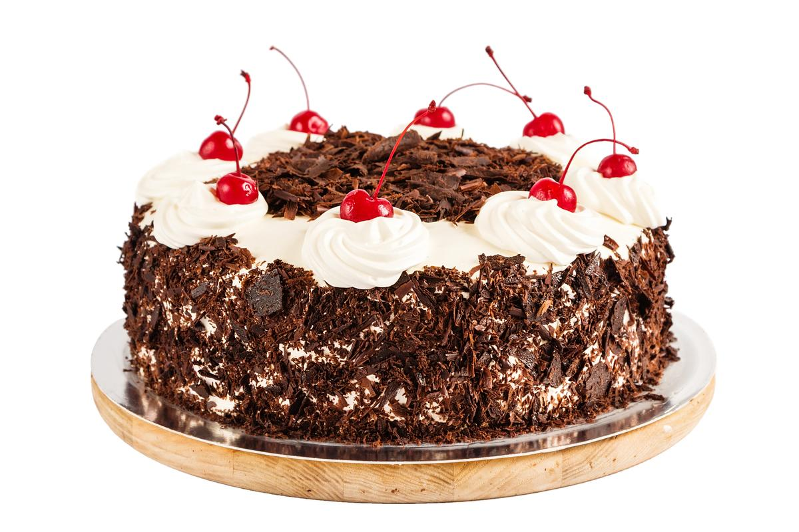

બ્લેક ફોરેસ્ટ કેક

વર્ણન
- પૂર્વ તૈયારીનો સમય: 30 મિનિટ
- પકાવવાનો સમય: 2 કલાક
- કેટલા લોકો માટે: 6
વાનગી
- બધા ડ્રાય વસ્તુઓ ભેગી કરી ચાળી લો.
- એમાં તેલ, એસેન્સ, જરૂર પૂરતું પાણી નાખી દો અને બલેનડર ની મદદથી ફેટી લો.
- કેક નુ મિશ્રણ તૈયાર કરો. કેક ટીન મા બટર પેપર મૂકી દો. તેલ લગાવીને મિશ્રણ ને બરાબર ભરી લો. 180 *
ડીગ્રી તાપમાન પર પ્રીહીટ કરો. ટીન ને 20 મિનિટ સુધી બેકિંગ કરો.
- એ દરમિયાન ગનાષ તૈયાર કરો. ગેસ પર વાસણમાં કિમ મૂકી દો. ગેસ ધીમી આચ પર રાખી દો. એમાં ચોકલેટ ટુકડા
ઊમેરો. ગેસ ઊપર ચોકલેટ પીગળે એટલે એમા બટર ઊમેરો. ટપકે એવુ consistency રાખો.
- કેક થાય પછી 2 કલાક સુધી ઠંડી કરો. રાઉન્ડ ટેબલ ઊપર બેઝ મૂકી ઠંડી કેક ના બે ભાગ કરી લો.
- એક ભાગ ઊપર ખાંડ સીરપ લગાવીને એમાં વીપીગ કિમ મૂકો (એમાં એસેન્સ મિક્ષ કરો)
- ઊપર ચેરી ટુકડા ઊમેરો. બીજો લેયર મૂકી દો. ખાંડ સીરપ લગાવીને કિમ લગાવીને ફીઝ મા મૂકો. 1/2 કલાક પછી
લેયર સમાન કરો.ગનાષ ને કેક ની કીનારે લગાડી દો.ઊપર મનપસંદ નોઝલ થી ડીઝાઇન કરો ઊપર થી ચેરી લગાવીને
ફીઝ મા મૂકો.
- તૈયાર છે બ્લેક ફોરેસ્ટ કેક.ઊપર થી ખમણેલી ચોકલેટ મૂકી છે